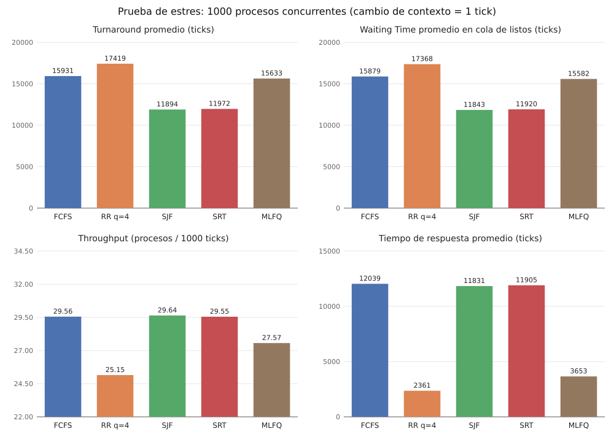
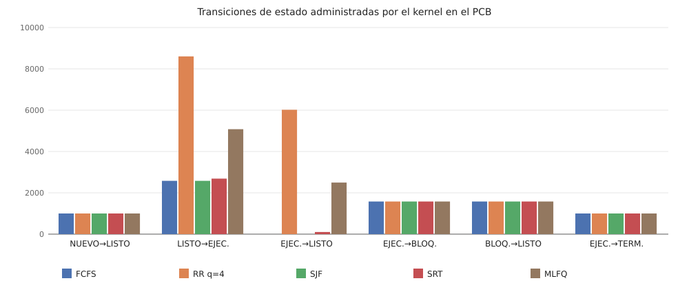
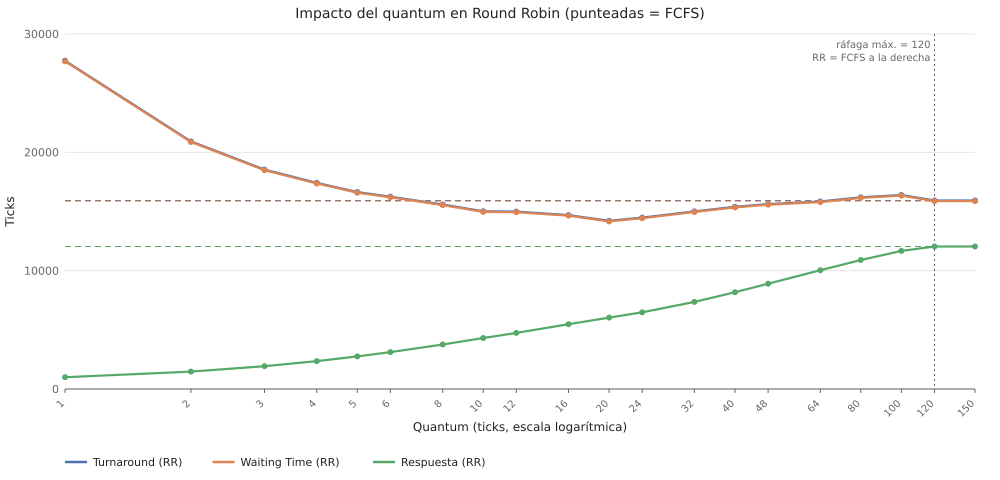

Equipo: EMMYS_PC (Windows, AMD64) · 1000 procesos concurrentes · cambio de contexto = 1 tick
| Algoritmo | Turnaround prom. | Waiting Time prom. | Respuesta prom. | Throughput (proc/1000 t) | CPU útil % | Cambio de contexto % | Cambios de contexto | Terminados |
|---|---|---|---|---|---|---|---|---|
| FCFS | 15930.89 | 15879.45 | 12039.28 | 29.556 | 92.08 | 7.63 | 2581 | 1000/1000 |
| RR q=4 | 17419.06 | 17367.62 | 2361.32 | 25.148 | 78.35 | 21.62 | 8598 | 1000/1000 |
| SJF | 11894.25 | 11842.81 | 11831.25 | 29.642 | 92.35 | 7.65 | 2581 | 1000/1000 |
| SRT | 11971.59 | 11920.16 | 11904.72 | 29.551 | 92.06 | 7.93 | 2685 | 1000/1000 |
| MLFQ | 15633.48 | 15582.05 | 3653.43 | 27.566 | 85.88 | 14.00 | 5079 | 1000/1000 |


| Quantum | Turnaround prom. | Waiting Time prom. | Respuesta prom. | Throughput | Cambio de contexto % | Cambios de contexto |
|---|---|---|---|---|---|---|
| 1 | 27747.76 | 27696.33 | 994.18 | 16.049 | 50.00 | 31154 |
| 2 | 20922.90 | 20871.47 | 1467.28 | 21.098 | 34.15 | 16186 |
| 3 | 18543.49 | 18492.05 | 1930.97 | 23.546 | 26.55 | 11277 |
| 4 | 17419.06 | 17367.62 | 2361.32 | 25.148 | 21.62 | 8598 |
| 5 | 16641.91 | 16590.47 | 2751.45 | 26.072 | 18.65 | 7152 |
| 6 | 16252.00 | 16200.57 | 3115.78 | 26.664 | 16.74 | 6278 |
| 8 | 15590.21 | 15538.77 | 3764.54 | 27.525 | 13.98 | 5078 |
| 10 | 15016.42 | 14964.98 | 4309.28 | 28.107 | 12.16 | 4325 |
| 12 | 14989.91 | 14938.48 | 4738.98 | 28.362 | 11.36 | 4005 |
| 16 | 14697.82 | 14646.38 | 5474.21 | 28.715 | 10.26 | 3572 |
| 20 | 14213.81 | 14162.38 | 6033.96 | 28.969 | 9.46 | 3267 |
| 24 | 14481.13 | 14429.69 | 6478.42 | 29.084 | 9.10 | 3130 |
| 32 | 15011.63 | 14960.19 | 7360.59 | 29.218 | 8.68 | 2972 |
| 40 | 15395.82 | 15344.39 | 8180.54 | 29.312 | 8.39 | 2863 |
| 48 | 15622.85 | 15571.42 | 8894.82 | 29.364 | 8.23 | 2802 |
| 64 | 15847.42 | 15795.98 | 10041.24 | 29.451 | 7.96 | 2702 |
| 80 | 16203.68 | 16152.24 | 10899.28 | 29.477 | 7.88 | 2672 |
| 100 | 16397.98 | 16346.55 | 11670.15 | 29.510 | 7.77 | 2634 |
| 120 | 15930.89 | 15879.45 | 12039.28 | 29.556 | 7.63 | 2581 |
| 150 | 15930.89 | 15879.45 | 12039.28 | 29.556 | 7.63 | 2581 |

Bitácoras de eventos del kernel: carpeta bitacoras/. Datos: comparativa.csv, barrido_quantum.csv, carga.csv.